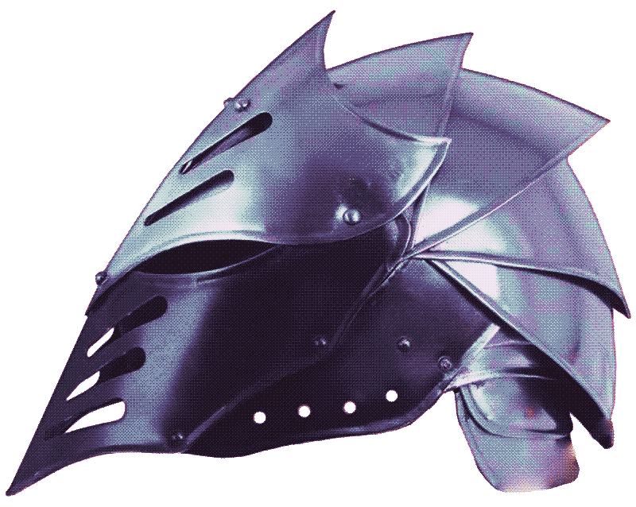

Les ISOPODES sont des crustacés dotés d'un exosquelette segmenté qui leur permet de se rouler en boule pour se protéger. Ce phénomène s’appelle la volvation.
Leur corps est aplati et est composé de segments bien distincts qui évoquent les lames superposées d'une armure médiévale.
Ces segments sont reliés par une membrane fine et flexible que l’on appelle “membranes articulaires”.
C’est ça qui permet mouvement et protection de façon simultanée.
On retrouve ce principe chez les armures médiévales. Le port de ces armures garantit protection et articulation lors des combats.
Du côté de la joaillerie, ce sont des pièces comme la bague Armour (armure en français) de Vivienne Westwood qui reprend le mécanisme dans les années 90 et s'inscrivent dans son esthétique punk-médiévale.
